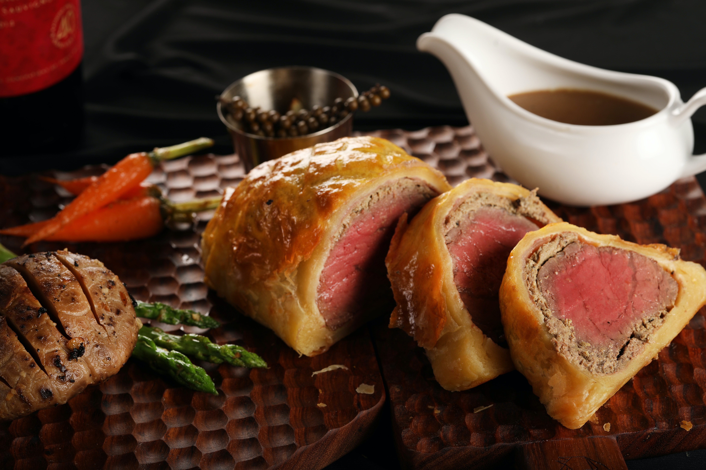
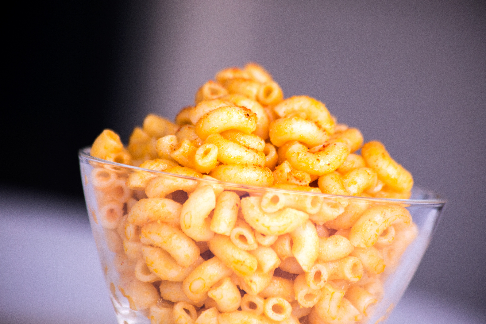

Beef Wellington

Description
This beef Wellington recipe includes a rich red wine sauce. It's easier than you think to make and absolutely perfect for entertaining at Christmas or any time you want to impress your guests! The beef tenderloin is best served medium-rare.
Ingredients
- 2 ½ pounds beef tenderloin
- 4 tablespoons butter, softened, divided
- 2 tablespoons butter
- 1 onion, chopped
- ½ cup sliced fresh mushrooms
- 2 ounces liver paté
- salt and pepper to taste
- 1 (17.5 ounce) package frozen puff pastry, thawed
- 1 large egg yolk, beaten
- 1 (10.5 ounce) can beef broth
- 2 tablespoons red wine
Steps
- Preheat the oven to 425 degrees F (220 degrees C).
- Place beef tenderloin in a baking dish. Spread 2 tablespoons softened butter over beef.
- Bake in the preheated oven until browned, 10 to 15 minutes. Remove beef from the pan and reserve pan juices; allow beef to cool completely.
- Increase oven temperature to 450 degrees F (230 degrees C).
- Melt 2 tablespoons butter in a skillet over medium heat. Sauté onion and mushrooms in butter for 5 minutes. Remove from heat and let cool.
- Mix paté and remaining 2 tablespoons softened butter together in a bowl; season with salt and pepper. Spread paté mixture over beef. Top with onion and mushroom mixture.
- Roll out puff pastry dough to about 1/4-inch thickness and place beef in the center.
- Fold up and seal all the edges, making sure the seams are not too thick. Place beef in a 9x13-inch baking dish, cut a few slits in the top of dough, and brush with egg yolk.
- Bake in the preheated oven for 10 minutes. Reduce heat to 425 degrees F (220 degrees C) and continue baking until pastry is a rich, golden brown, 10 to 15 minutes. An instant-read thermometer inserted into the center should read between 122 to 130 degrees F (50 to 54 degrees C) for medium rare. Set aside to rest.
- Meanwhile, place reserved pan juices in a small saucepan over high heat. Stir in beef broth and red wine; boil until slightly reduced, about 5 minutes. Strain and serve with beef.
- Serve hot and enjoy!
Simple Macaroni and Cheese

Description
Quick, easy, and tasty macaroni and cheese dish. Fancy, designer mac and cheese often costs forty or fifty dollars to prepare when you have so many expensive cheeses, but they aren't always the best tasting. This simple recipe is cheap and tasty.
Ingredients
- 1 (8 ounce) box elbow macaroni
- ¼ cup butter
- ¼ cup all-purpose flour
- ½ teaspoon salt
- ground black pepper to taste
- 2 cups milk
- 2 cups shredded Cheddar cheese
Steps
- Bring a large pot of lightly salted water to a boil. Cook elbow macaroni in the boiling water, stirring occasionally until cooked through but firm to the bite, 8 minutes.
- At the same time, melt butter in a saucepan over medium hea
- Pour in milk slowly, while stirring continuously. Continue to cook and stir until mixture is smooth and bubbling, about 5 minutes, making sure the milk doesn't burn.
- Add Cheddar cheese and stir until melted, 2 to 4 minutes.
- Drain macaroni and fold into cheese sauce until coated.
- Serve hot and enjoy!
Easy Nutella Cookies

Description
These Nutella cookies are super moist and soft, with flavors of both chocolate and hazelnut in every bite!
Ingredients
- ½ cup butter, at room temperature
- ½ cup white sugar
- 1 egg
- 1 teaspoon vanilla extract
- 1 cup chocolate-hazelnut spread (such as Nutella®)
- 1 cup all-purpose flour
- ¼ cup unsweetened cocoa powder
- 1 cup milk chocolate chips
- ½ cup chopped hazelnuts
Steps
- Preheat the oven to 350 degrees F (175 degrees C). Line 2 baking sheets with aluminum foil or parchment paper.
- Cream butter and sugar in a medium bowl with an electric mixer until light and fluffy. Add egg and vanilla extract; beat well. Mix in chocolate-hazelnut spread until well-combined. Gradually mix in flour and cocoa powder. Stir in chocolate chips and hazelnuts.
- Drop spoonfuls of dough 2 inches apart onto the prepared baking sheets.
- Bake in the preheated oven for 8 minutes. Turn the oven off and allow the cookies to sit in the oven for 2 minutes more. Serve cookies warm or transfer to a wire rack to cool completely.
recipes sourced from
Wellington Recipe
Mac and Cheese Recipe
Nutella Cookies